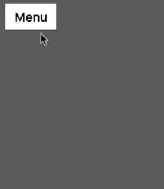

原文地址：https://developers.google.com/web/updates/2017/03/performant-expand-and-collapse
原文标题：Building performant expand & collapse animations
原文作者：Paul Lewis, Stephen McGruer
翻译：杜梦杰
TL;DR
进行动画操作时使用scale变换（即transform: scale）。通过限制缩放来阻止子元素在动画过程中变形。
我们之前已经发布过高性能视差滚动和无限滚动效果的文章。本文将讨论如何创建高性能的裁剪动画（Github repo）。
以展开菜单为例：

某些制作展开菜单的方法比其他方法更加高性能。
Bad: 动画操作容器元素的宽高
你可以想到用CSS来操作容器元素的宽度width和高度height。
|
这种方法的问题是要求动画操作宽度width和高度height。这些属性要求每帧都要计算布局并绘制结果，这是非常耗费性能的并且通常会使帧率低于60fps。如果你不了解这些知识，可以阅读我们的渲染性能Rendering Performance指导，以便更好的了解渲染过程。
Bad: 使用 CSS clip 或 clip-path 属性
一种替代方法是使用clip属性（不赞成使用）来实现展开和折叠效果。如果你喜欢的话也可以使用clip-path。但是clip-path的支持性比clip差。但是不建议使用clip属性。是很纠结，但是不要失望，这并不是你想要的解决方法。
|
尽管这种方法比操作宽度width和高度height更好，但是缺点是仍旧会触发重绘。同时，如果你使用clip属性，要求元素必须是绝对定位absolute或固定定位fixed，这也会造成一些额外的问题。
Good: 动画缩放
由于这个效果涉及到元素的缩放，你可以使用scale变换。改变transform并不要求改变布局或重新绘制，这是极好的，并且浏览器可以把这些改变交给GPU来处理，这就意味着变换效果会被加速并很有可能达到60fps。
这种方法的缺点嘛，就和渲染性能Rendering Performance的很多东西一样，需要一些准备工作。但绝对是值得的！
Step 1: 计算出初始状态和结束状态
使用这种缩放动画的方法，第一步就是要知道元素展开和收缩时的尺寸。有些情况下你不能一次就得到所有信息，此时你需要切换不同的类来获取元素的不同状态。如果你这样做的话，需要注意一点：如果与上次运行相比，样式style发生了改变，getBoundingClientRect()(或offsetWidth和offsetHeight)会强制浏览器更新样式和布局styles and layout。
|
如果操作目标是菜单这样的对象，我们可以合理假设它的初始状态就是自然比例(1,1)。这个自然比例代表展开状态，这意味着需要从缩小的状态（上面计算出来的）回到自然比例。
但是，这种方法也会缩放菜单的内容。如下图所示：
我们应该怎么做呢？你可以为内容应用counter-transform，例如容器缩小到原始尺寸的1/5，你可以把内容放大5倍来避免内容被挤压。
有两点需要注意：
counter-transform也是一种缩放操作。就像容器上的动画一样，它也可以被加速。需要确保动画操作的元素有自己的compositor layer，为了这一点可以为元素添加will-change: transform，如果你需要支持旧版浏览器，添加backface-visibility: hiddden。counter-transform每一帧都必须计算。这里就有点棘手了，假设动画是在CSS中且使用了缓动函数easing function，在进行counter-transform操作时缓动函数本身也需要抵消。但是，计算出反曲线，例如cubic-bezier(0, 0, 0.3, 1)，并不是那么简单。
使用JavaScript来实现这个动画效果确实很诱人。毕竟，这样的话你就可以使用一个缓动方程来计算出每一帧缩放和反缩放scale and counter-scale的值。当主线程忙碌时就会体现出所有基于JavaScript的动画的缺点，你的动画会阻塞在一起，这对用户体验很不好。
Step 2: 动态创建CSS动画
解决方法看起来可能有些奇怪，就是使用缓动函数动态的创建关键帧动画keyframed animation并注入到页面中让菜单使用。这种方法的主要好处是关键帧动画实现的变形可以运行在compositor上，不会被主线程上的任务所干扰。
为了制作关键帧动画，我们计算出从0%到100%之间元素及其内容所需要的缩放值。这些关键帧动画可以压缩为一个字符串作为一个style element注入到页面中。注入样式会导致页面重新计算样式Recalculate Styles，这个额外工作是浏览器必须做的，但只会在组件启动时运行一次。
|
你可能会对for循环里的ease()函数非常好奇。你可以使用类似这样的函数来使从0到1的值转化为对应的过渡值。
|
如果你需要其他的缓动方程，请点击Tween.js by Soledad Penadés，上面有很多资源。
Step 3: 激活CSS动画
动画已经被创建好并放到页面中了，最后一步就是切换类toggle class来激活动画。
|
这样上一步创建的动画就会展现出来啦。由于关键帧动画已经是缓动的了，所以时间函数timing function需要设置为线性linear，否则每帧之间都有缓动看起来会非常的奇怪。
当菜单收缩的时候有两种方法：反向运行CSS动画。这样是没什么问题，但是感觉就像是展开动画的倒放，如果展开时使用了缓出ease-out，那收缩就是缓入ease-in，看起来相当迟缓。更加合适的解决方法是为收缩创造第二套动画。和创建展开关键帧动画的步骤一样，只是交换了开始值和结束值。
|
高级版本: 圆形菜单
使用这种方法也可以实现圆形展开和收缩动画。
和上个版本的原则一样，你可以缩放一个元素，反缩放它的子元素。在这个例子中缩放的元素拥有属性border-radius: 50%，把它变成一个圆，并被一个拥有属性`overflow: hidden;的父元素包裹，意味着你看不到该父元素之外的圆圈放大的部分。
这种方法一个警告：在动画过程中，Chrome浏览器在低DPI屏幕上文字会模糊，这是由于缩放文字会引起舍入误差rounding error。想了解更多细节请点击。
总结
现在你了解了一种构建高性能展开折叠动画的方法。如果动画可以加速那就更完美了，我们在操作clip和clip-path要多加注意，同时杜绝动画变换宽高。
对于这种特效使用Web Animations也是非常方便的，虽然拥有JavaScript API，但如果你只操作transform和opacity的话，它也可以运行在compositor thread上。很可惜Web Animations的支持性并不是很好，不过你可以以渐进增强的方法来使用它。
|
现在你仍可以使用JS库JavaScript-based library来实现动画，但你会发现注入CSS动画会有更加可靠的性能。